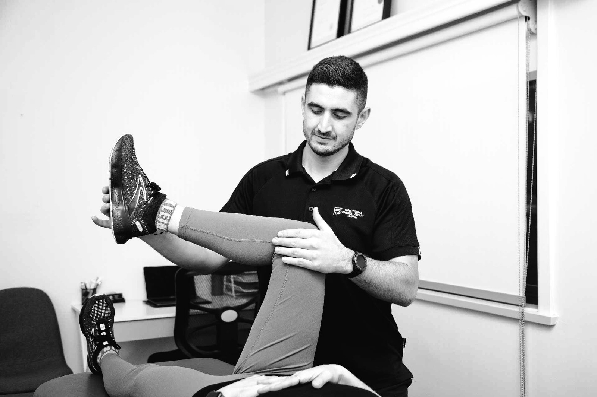

From weekend athletes to competitive sport, we assess, treat and rehabilitate sporting injuries, then build a clear plan to get you back to training with confidence.

Whether it's an acute injury or a niggle that won't settle, sports physiotherapy works best when treatment and rehabilitation go hand in hand. We find the cause, settle your symptoms with hands-on treatment, and rebuild your strength and load tolerance so the injury doesn't come back. Every plan is built around your sport and your goals.
Book an assessment with our Dapto team and get a clear plan to return to your sport.